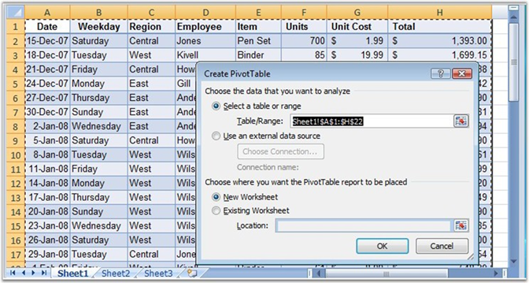
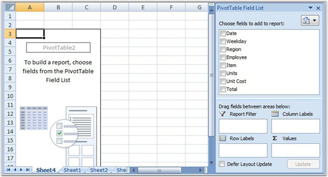
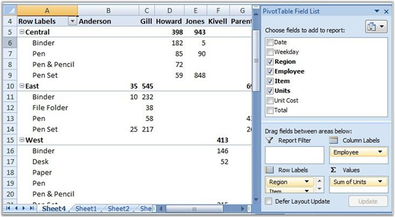
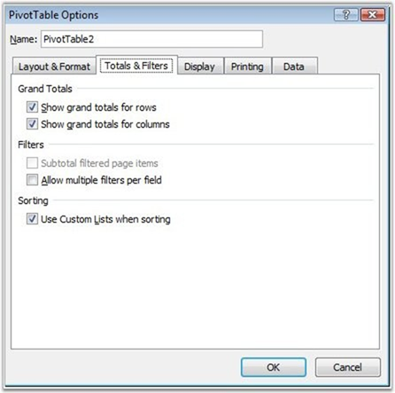
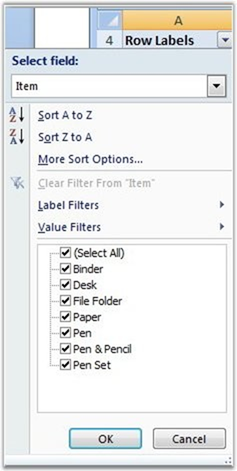
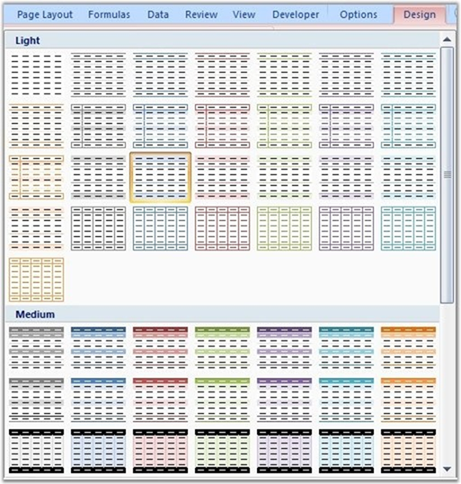
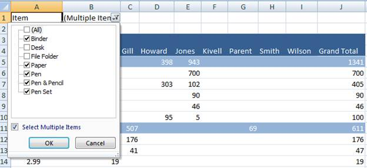
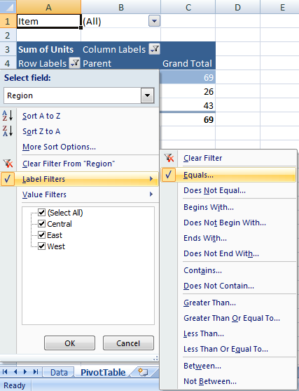
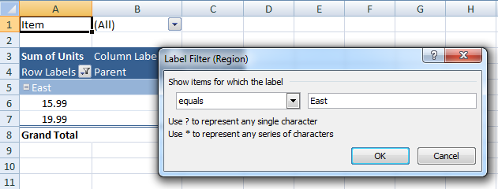

Pivot Table Creation By Using MS Excel 2007
In Excel, Pivot table can be inserted by selecting the PivotTable option from the Insert menu.

Figure 87: Create PivotTable Dialog Box
Excel automatically selects the entire range. However, it is possible to modify it if necessary. It also allows choosing where to place the PivotTable (New Worksheet is most commonly used to place the pivot table).

Figure 88: New Sheet to place the Pivot Table
Once you select a field, the Pivot Table appears. Now you need to populate it with data fields, which appear in the field list on the right. Fields can be dragged to the Pivot Table grid, to one of the defined areas.

Figure 89: Adding fields to the Pivot table
To filter by a field, open its drop-down list and select the value by which to filter. The table now displays data only for the filtered criterion (in this case, the Central region).
You can also sort by a field by opening its drop-down list and selecting one of the sort orders.
PivotTable Creation Manipulation Using XlsIO
XlsIO provides support for creation and manipulation of Pivot Table by using simple APIs. IPivotCache interface caches the data that needs to be summarized. IPivotTable represents a pivot table in object, and has properties that allow customizing it. IPivotTable interface returns the collection of Pivot Tables present in a worksheet. IPivotField represents the field in the pivot table. This includes row, column and data field axis. IPivotDataFields gets collection of data field.
 Note: Pivot Table is currently not supported for
.xls format.
Note: Pivot Table is currently not supported for
.xls format.
Following code example illustrates how to create a pivot table by using XlsIO.
|
[C#]
IPivotCache cache = book.PivotCaches.Add(sheet["A1:D136"]); IPivotTable pivotTable = sheet1.PivotTables.Add("PivotTable1", sheet1["A1"], cache); pivotTable.Fields[0].Axis = PivotAxisTypes.Row; pivotTable.Fields[1].Axis = PivotAxisTypes.Row; pivotTable.Fields[3].Axis = PivotAxisTypes.Column;
IPivotField field = pivotTable.Fields[2]; pivotTable.DataFields.Add(field, "sum", PivotSubtotalTypes.Sum); |
Properties
The following properties of the IPivotTable interface are used to fetch pivot table fields.
Table 1: IPivotTable Properties Table
|
Property |
Description |
|
Name |
Gets or sets pivot table name |
|
Location |
Returns pivot table location |
|
CacheIndex |
Gets Index of the pivot Cache. Read-only |
|
Fields |
Gets collection of pivot fields. Read-only |
|
DataFields |
Gets IDataField collection of pivot table data fields. Read-only |
|
ColumnFields |
Returns the collection of Column field for the specified pivot table. Read-only |
|
RowFields |
Returns the collection of Row field for the specified pivot table. Read-only |
|
PageFields |
Returns the collection of page field for the specified pivot table. Read-only |
|
CalculatedFields |
Returns the collection of calculated fields of the specified pivot table. Read-only |
|
ColumnsPerPage |
Specifies the number of columns per page for this PivotTable that the filter area will occupy |
|
RowsPerPage |
Specifies the number of rows per page for this PivotTable that the filter area will occupy |
|
Options |
Represents the pivot table options.Read-only |
The following properties of the IPivotTableOption interface are used to customize the settings of the pivot table.
Table 2: IPivotTableOption Properties Table
|
Property |
Description |
|
ShowAsteriskTotals |
True, if an asterisk (*) is displayed next to each subtotal and grand total value in the specified PivotTable report |
|
ColumnHeaderCaption |
Specifies the string to be displayed in column header of pivot Table when in compact layout mode. |
|
RowHeaderCaption |
Specifies the string to be displayed in Row header of pivot table when in compact layout mode |
|
ShowCustomSortList |
Specifies a boolean value that indicates whether the "custom lists" option is offered when sorting this PivotTable |
|
ShowFieldList |
False, to disable the ability to display the field list for the PivotTable. If the field list was already being displayed it disappears |
|
IsDataEditable |
True, to disable the alert for when the user overwrites values in the data area of the PivotTable |
|
EnableFieldProperties |
True, if the PivotTable Field dialog box is available when you double-click the PivotTable field |
|
Indent |
Specifies the indentation increment for compact axis and can be used to set the Report Layout to Compact Form |
|
ErrorString |
Returns or sets the string displayed in cells that contain errors when the DisplayErrorString property is True |
|
DisplayErrorString |
True, if the PivotTable report displays a custom error string in cells that contain errors. The default value is False |
|
MergeLabels |
True, if the specified PivotTable report’s outer-row item, column item, subtotal, and grand total labels use merged cells. |
|
PageFieldWrapCount |
Returns or sets the number of page fields in each column or row in the PivotTable report. |
|
PageFieldsOrder |
Returns or sets the order in which page fields are added to the PivotTable report’s layout |
|
DisplayNullString |
True, if the PivotTable report displays a custom string in cells that contain null values. The default value is True. |
|
NullString |
Returns or sets the string displayed in cells that contain null values when the DisplayNullString property is True. |
|
PreserveFormatting |
True, if formatting is preserved when the report is refreshed or recalculated by operations such as pivoting, sorting, or changing page field items. |
|
ShowTooltips |
True, if tooltips displayed for the pivot table cell. |
|
DisplayFieldCaptions |
Gets/sets value controlling whether or not filter buttons and PivotField captions for rows and columns are displayed in the grid. |
|
PrintTitles |
True, if the print titles for the worksheet are set based on the PivotTable report. False, if the print titles for the worksheet are used. |
|
RowLayout |
This property specifies the pivot table row layout settings. |
Following are the properties of the IPivotCache interface.
Table 3: IPivotCache Properties Table
|
Property |
Description |
|
Index |
Gets zero-based cache index. Read-only |
|
SourceType |
Specifies the pivot table cache source type. Read-only |
|
SourceRange |
Returns the data source for the PivotTable report. Read-only. |
SubTotals
You can also insert various subtotal types for the pivot table through the PivotSubtotalTypes enum.
It is also possible to insert multiple subtotals for a field by using Subtotal property of IPivotField. This is demonstrated in the following code example.
|
[C#]
IPivotTable pivotTable = sheet1.PivotTables.Add("PivotTable1", sheet1["A1"], cache); pivotTable.Fields[0].Axis = PivotAxisTypes.Row; pivotTable.Fields[0].Subtotals = PivotSubtotalTypes.Sum| PivotSubtotalTypes.Average | PivotSubtotalTypes.Max | PivotSubtotalTypes.Min; |
Pivot Table Options
Excel provides various options through the PivotTableOptions dialog box to customize the appearance of the pivot table.

Figure 90: PivotTable Options Dialog Box
XlsIO supports the pivot table options using IPivotTableOptions interface to control various settings for the existing Pivot table. The following code snippet illustrates the same.
|
[C#] IPivotTable pivotTable = sheet.PivotTables[0]; IPivotTableOptions options = pivotTable.Options; options.ShowFieldList = true; options.ColumnHeaderCaption = "Sales Details"; options.ColumnHeaderCaption = "Customer Names"; options.ErrorString = "#ERROR#"; |
Show or Hide the Field List
In MS Excel, click the Field List button in the Design Tab. Show or Hide the pivot table field list pane in XlsIO,
|
[C#] options.ShowFieldList = true; |
Header Caption:
In MS Excel, the Field Header button is used to show or hide the pivot table caption. In XlsIO, to enable and disable the caption, use the DisplayFieldCaption property. Use the RowHeaderCaption and ColumnHeadercaption properties to edit the respective pivot table headers.
|
[C#] options.RowHeaderCaption = "Payment Dates"; options.ColumnHeaderCaption = "Payments"; |
Grand Total
You can display or hide the totals for the current Pivot Table report by selecting an option from Design -> Layout-> Grand Totals. XlsIO provides an equivalent API to perform with simple properties as follows.
|
[C#]
pivotTable.ColumnGrand = false; pivotTable.RowGrand = true; |
Show/Hide Collapse Button
You can also show/hide the Collapse button that appears in the fields of the pivot table, when there exists more than one item in a field. The following code example illustrates how to do this.
|
[C#]
pivotTable.ShowDrillIndicators = true; |
Display Field Caption and Filter Option
It is also possible to show/hide the Filter button and field name in the pivot table by using the PivotTable Options dialog box in Excel. This is illustrated in the following code.
|
[C#]
pivotTable.DisplayFieldCaptions = true; |

Figure 91: Field Captions
Repeating Row Label on Each Page
XlsIO allows setting the row label on each page, while printing, allowing users to view the header on each page.
|
[C#]
pivotTable.RepeatItemsOnEachPrintedPage = false; |
Formatting the Pivot Table By using Excel 2007
Excel 2007 provides set of built-in styles that allow formatting the pivot table row and column header. When your cell pointer is inside the pivot table, you will have two new ribbon tabs under PivotTable Tools heading - Options and Design. On the Design ribbon, the Pivot Table Styles gallery offers 85 built-in formats for pivot tables.

Figure 92: Pivot Table Styles Gallery
Formatting Pivot Table By Using XlsIO
XlsIO supports 85 built-in styles of Excel 2007, enabling users to create a table with rich formatting. This is done by using the BuiltInStyle property of IPivotTable as follows.
|
[C#]
pivotTable.BuiltInStyle = PivotBuiltInStyles.PivotStyleDark12; |
Adding Calculated Field in the existing Pivot Table
Calculated fields are a special type of database field that perform calculations by using the contents of other fields in the pivot table with the given formula. The formula can contain operators and expressions as in other worksheet formulas. You can use constants and refer to data from the PivotTable., XlsIO supports to read and create the Calculated Fields in the existing pivot table. The following are MS Excel restriction when using the formula.
· Formula cannot contain cell references or defined names and
· Formula cannot contains Worksheet functions that require cell references
· Formula cannot use array functions.
In MS Excel, the Calculated Field can be added using the calculation option from the Option tab. In XlsIO, same can be achieved with following code snippet.
|
[C#]
IPivotTable pivotTable = sheet.PivotTables[0]; IPivotField field = pivotTable.CalculatedFields.Add("Percent", "Sales/Total*100"); |
The formula can be fetched from the formula property of the IPivotField.
|
[C#]
field.Formula = "Sales/Total*100"; |
Lay Out the Pivot Table as MS Excel 2007
We have provided support for drawing a pivot table similar to the MS Excel layout using Essential XlsIO. Previously, we let MS Excel lay out the pivot table for XlsIO. By using a layout method, we draw the pivot table layout using XlsIO. Now we can get any values of the pivot table using XlsIO dynamically, apply a filter to the pivot table, and can get the filtered values of the pivot table dynamically.
Methods
|
Method Name |
Description |
|
Layout |
Method to lay out the pivot table using XlsIO like the MS Excel pivot table layout. |
The following code example
illustrates how to enable Essential XlsIO to lay out the pivot table like MS
Excel.
|
[C#]
IPivotCache cache = book.PivotCaches.Add(sheet["A1:D136"]); IPivotTable pivotTable = sheet1.PivotTables.Add("PivotTable1", sheet1["A1"], cache);
IPivotField field = pivotTable.Fields[0]; Field.Axis = PivotAxisTypes.Page; //Setting the Filter to Page field of Pivot table IPivotFilter filter = field .PivotFilters.Add(); filter.Value1 = "East";
pivotTable.Fields[0].FilterValue=”Binder”; pivotTable.Fields[1].Axis = PivotAxisTypes.Row; pivotTable.Fields[3].Axis = PivotAxisTypes.Column;
IPivotField field = pivotTable.Fields[2]; pivotTable.DataFields.Add(field, "sum", PivotSubtotalTypes.Sum); //The following code snippet must be included to XlsIO layout the pivot //table like MS Excel. pivotTable.Layout(); |
|
[VB.Net]
Dim cache As IPivotCache = book.PivotCaches.Add(sheet("A1:D136")) Dim pivotTable As IPivotTable = sheet1.PivotTables.Add("PivotTable1", sheet1("A1"), cache)
Dim field As IPivotField = pivotTable.Fields(0) Field.Axis = PivotAxisTypes.Page 'Setting the Filter to Page field of Pivot table Dim filter As IPivotFilter = field.PivotFilters.Add() filter.Value1 = "East" pivotTable.Fields(1).Axis = PivotAxisTypes.Row pivotTable.Fields(3).Axis = PivotAxisTypes.Column
Dim field As IPivotField = pivotTable.Fields(2) pivotTable.DataFields.Add(field, "sum", PivotSubtotalTypes.Sum) 'The following code snippet must be included to XlsIO layout the pivot table 'like MS Excel.
pivotTable.Layout() |
Supported Elements:
1. Apply filter value to page filter of the pivot table.
2. Pivot table values can be accessed dynamically.
Apply Filter to Pivot Table
In Microsoft Excel, filtered data of a pivot table displays only the subset of data that meet the criteria (criteria: Conditions you specify to limit which records are included in the result set of a query or filter.) we specified. The Excel has drop-down filter arrows for report/page filter fields, row fields, and column fields. This can be achieved in XlsIO using the IPivotFilters interface.
Page Field Filter
The page field filter filters the pivot table based on page field items. The following code example illustrates how to apply multiple filters to the page field items.
|
[C#]
//Step 1: Instantiate the spreadsheet creation engine. ExcelEngine excelEngine = new ExcelEngine(); //Step 2: Instantiate the excel application object. IApplication application = excelEngine.Excel;
//Set the default version as Excel 2010. application.DefaultVersion = ExcelVersion.Excel2010;
IWorkbook workbook = application.Workbooks.Open("PivotCodeDate.xlsx");
// The first worksheet object in the worksheets collection is accessed. IWorksheet worksheet = workbook.Worksheets[0];
//Access the worksheet to draw pivot table. IWorksheet pivotSheet = workbook.Worksheets[1];
//Select the data to add in cache. IPivotCache cache = workbook.PivotCaches.Add(worksheet["A1:H50"]);
//Insert the pivot table. IPivotTable pivotTable = pivotSheet.PivotTables.Add("PivotTable1", pivotSheet["A1"], cache);
//Set field axis to page. pivotTable.Fields[4].Axis = PivotAxisTypes.Page;
//Set field axis to row. pivotTable.Fields[2].Axis = PivotAxisTypes.Row; pivotTable.Fields[6].Axis = PivotAxisTypes.Row;
//Set field axis to column. pivotTable.Fields[3].Axis = PivotAxisTypes.Column;
IPivotField field = pivotSheet.PivotTables[0].Fields[5]; pivotTable.DataFields.Add(field, "Sum of Units", PivotSubtotalTypes.Sum);
//Apply page field filter. IPivotField pageField = pivotTable.Fields[4];
//Select multiple items in page field to filter. pageField.Items[1].Visible = false; pageField.Items[2].Visible = false;
//Apply built-in style. pivotTable.BuiltInStyle = PivotBuiltInStyles.PivotStyleMedium2;
//Activate the pivot worksheet. pivotSheet.Activate();
//Save the workbook to disk. workbook.SaveAs("PivotTable.xlsx");
//Close the workbook. workbook.Close();
//No exception will be thrown if there are unsaved workbooks. excelEngine.ThrowNotSavedOnDestroy = false; excelEngine.Dispose();
|
|
[VB]
'Step 1: Instantiate the spreadsheet creation engine. Dim excelEngine As New ExcelEngine() 'Step 2: Instantiate the excel application object. Dim application As IApplication = excelEngine.Excel
'Set the default version as Excel 2010. application.DefaultVersion = ExcelVersion.Excel2010
'Get the path of input file. Dim workbook As IWorkbook = application.Workbooks.Open("PivotCodeDate.xlsx")
'The first worksheet object in the worksheets collection is accessed. Dim worksheet As IWorksheet = workbook.Worksheets(0)
'Access the worksheet to draw pivot table. Dim pivotSheet As IWorksheet = workbook.Worksheets(1)
'Select the data to add in cache. Dim cache As IPivotCache = workbook.PivotCaches.Add(worksheet("A1:H50"))
'Insert the pivot table. Dim pivotTable As IPivotTable = pivotSheet.PivotTables.Add("PivotTable1", pivotSheet("A1"), cache) 'Set field axis to page. pivotTable.Fields(4).Axis = PivotAxisTypes.Page
'Set field axis to row. pivotTable.Fields(2).Axis = PivotAxisTypes.Row pivotTable.Fields(6).Axis = PivotAxisTypes.Row
'Set field axis to column. pivotTable.Fields(3).Axis = PivotAxisTypes.Column
Dim field As IPivotField = pivotSheet.PivotTables(0).Fields(5) pivotTable.DataFields.Add(field, "Sum of Units", PivotSubtotalTypes.Sum)
'Apply page field filter. Dim pageField As IPivotField = pivotTable.Fields(4)
'Select multiple items in page field to filter. pageField.Items(1).Visible = False pageField.Items(2).Visible = False
'Apply built-in style. pivotTable.BuiltInStyle = PivotBuiltInStyles.PivotStyleMedium2
'Activate the pivot worksheet. pivotSheet.Activate()
'Save the workbook to disk. workbook.SaveAs("PivotTable.xlsx")
'Close the workbook. workbook.Close()
'No exception will be thrown if there are unsaved workbooks. excelEngine.ThrowNotSavedOnDestroy = False excelEngine.Dispose()
|

Figure 93: Applying multiple filter
Row Field and Column Field Filter
The row field and column field filter filters the pivot table based on labels, values and items of fields. The following code example illustrates how to apply this filter to a pivot table.
|
[C#]
//Step 1: Instantiate the spreadsheet creation engine. ExcelEngine excelEngine = new ExcelEngine(); //Step 2: Instantiate the excel application object. IApplication application = excelEngine.Excel;
//Set the default version as Excel 2010. application.DefaultVersion = ExcelVersion.Excel2010;
IWorkbook workbook = application.Workbooks.Open("PivotCodeDate.xlsx");
// The first worksheet object in the worksheets collection is accessed. IWorksheet worksheet = workbook.Worksheets[0];
//Access the worksheet to draw pivot table. IWorksheet pivotSheet = workbook.Worksheets[1];
//Select the data to add in cache. IPivotCache cache = workbook.PivotCaches.Add(worksheet["A1:H50"]);
//Insert the pivot table. IPivotTable pivotTable = pivotSheet.PivotTables.Add("PivotTable1", pivotSheet["A1"], cache); pivotTable.Fields[4].Axis = PivotAxisTypes.Page;
pivotTable.Fields[2].Axis = PivotAxisTypes.Row; pivotTable.Fields[6].Axis = PivotAxisTypes.Row; pivotTable.Fields[3].Axis = PivotAxisTypes.Column;
IPivotField field = pivotSheet.PivotTables[0].Fields[5]; pivotTable.DataFields.Add(field, "Sum of Units", PivotSubtotalTypes.Sum);
//Apply row field filter. IPivotField rowField = pivotTable.Fields[2]; //Applying Label based row field filter rowField .PivotFilters.Add(PivotFilterType.CaptionEqual, null, "East", null);
//Apply column field label based filter. IPivotField colField = pivotTable.Fields[3];
colField.Items[0].Visible = false; colField.Items[1].Visible = false;
//Apply built-in style. pivotTable.BuiltInStyle = PivotBuiltInStyles.PivotStyleMedium2;
//Activate the pivot worksheet. pivotSheet.Activate();
//Save the workbook to disk. workbook.SaveAs("PivotTable.xlsx");
//Close the workbook. workbook.Close();
//No exception will be thrown if there are unsaved workbooks. excelEngine.ThrowNotSavedOnDestroy = false; excelEngine.Dispose();
|
|
[VB]
'Step 1: Instantiate the spreadsheet creation engine. Dim excelEngine As New ExcelEngine() 'Step 2: Instantiate the excel application object. Dim application As IApplication = excelEngine.Excel
'Set the default version as Excel 2010. application.DefaultVersion = ExcelVersion.Excel2010
Dim workbook As IWorkbook = application.Workbooks.Open("PivotCodeDate.xlsx")
'The first worksheet object in the worksheets collection is accessed. Dim worksheet As IWorksheet = workbook.Worksheets(0)
'Access the worksheet to draw pivot table. Dim pivotSheet As IWorksheet = workbook.Worksheets(1)
'Select the data to add in cache. Dim cache As IPivotCache = workbook.PivotCaches.Add(worksheet("A1:H50"))
'Insert the pivot table. Dim pivotTable As IPivotTable = pivotSheet.PivotTables.Add("PivotTable1", pivotSheet("A1"), cache) pivotTable.Fields(4).Axis = PivotAxisTypes.Page
pivotTable.Fields(2).Axis = PivotAxisTypes.Row pivotTable.Fields(6).Axis = PivotAxisTypes.Row pivotTable.Fields(3).Axis = PivotAxisTypes.Column
Dim field As IPivotField = pivotSheet.PivotTables(0).Fields(5) pivotTable.DataFields.Add(field, "Sum of Units", PivotSubtotalTypes.Sum)
'Apply row field filter. Dim rowField As IPivotField = pivotTable.Fields(2) 'Applying Label based row field filter rowField.PivotFilters.Add(PivotFilterType.CaptionEqual, Nothing, "East", Nothing)
'Apply column field label based filter. Dim colField As IPivotField = pivotTable.Fields(3)
colField.Items(0).Visible = False colField.Items(1).Visible = False
'Apply built-in style. pivotTable.BuiltInStyle = PivotBuiltInStyles.PivotStyleMedium2
'Activate the pivot worksheet. pivotSheet.Activate()
'Save the workbook to disk. workbook.SaveAs("PivotTable.xlsx")
'Close the workbook. workbook.Close()
'No exception will be thrown if there are unsaved workbooks. excelEngine.ThrowNotSavedOnDestroy = False excelEngine.Dispose()
|

Figure 94: Applying Row Field Filter

Figure 95: Setting Value to the Filter